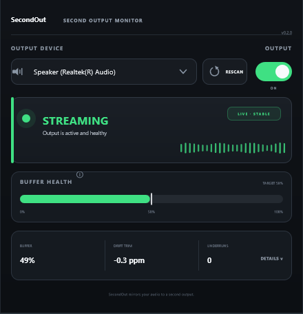

SecondOut mirrors your DAW's master bus to a second output device — without touching your ASIO interface. Stream your mix, feed a switcher, or record a safety copy, while your monitoring path stays exactly as it is.
ASIO drivers lock a device to one process at a time — brilliant for low-latency tracking, useless the moment you also need that same mix somewhere else: a switcher for a service, an encoder for a stream, a safety recording running in parallel.
Your DAW owns the interface. Nothing else can open it — not OBS, not a second console, not a hardware switcher — without stopping your session first.
Your interface stays exactly as configured. SecondOut opens a second, independent connection alongside it — no session interruption, no re-patching.
SecondOut is a plugin, not a driver replacement. It sits on your master bus like any other insert — reading the exact audio your DAW is about to output, then handling the second device entirely on its own.
Drop it on the master bus. It copies the exact mix you're hearing — before it ever reaches your audio driver — so the feed matches your monitors sample for sample.
Independent of ASIO entirely. Runs in shared mode by design, so it won't fight your interface — or anything else — for exclusive access to a device.
Your DAW and the second device run on separate hardware clocks that drift apart by nature. A servo loop nudges the resampling ratio by fractions of a sample per second — the buffer stays centred, and you never hear it happen.
One screen. One question it answers instantly: is the feed healthy? Everything else stays out of the way until you need it.

One glance answers it: streaming, buffering, or a problem — never a wall of meters.
Watch the drift correction hold centre. If it starts creeping toward an edge, you'll see it before it becomes a dropout.
Physical interfaces or virtual cables — pick any WASAPI output, rescan when something changes.
Device disconnected, or another app already has it open — SecondOut says which, and what to do next.
Feed a switcher or encoder from your DAW's master bus while your interface stays dedicated to monitoring.
Send the mix to a streaming rig during a service without repatching the console or your monitor path.
Route your session into OBS or a capture app through a virtual cable, no exclusive-mode conflicts.
Keep a parallel record of the mix on a second device, isolated from your primary signal chain.
Still in development. Leave your email from the App Store and you'll hear the moment it's ready to download.